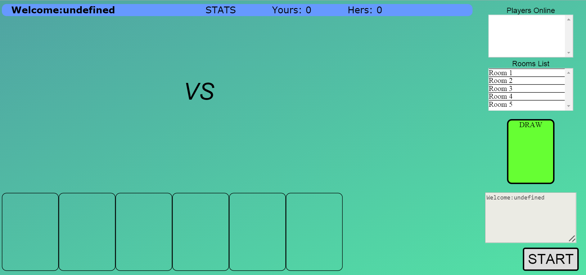

Rules of HEX CARDS beta
Origination:
HEX cards is poker game I used to play when I was just a kid, so presumably the game was
originated
at my hometown or the area around. As I remember, the game stayed on top of the poker game
list for quite a while.
Adults gambled on it, and my dad and sister, we also played a lot, definitely a lot of fun,
ever lasting
memory, I can still remember how I broke my sister's nose while playing it (Yes we didn't
gamble money, but
nose scratching). The memory is extremely sweet when you realize some has gone and some
become the mother.
What's more interesting is my girl loves this game even now (I am no longer a fun of poker game),
So there are enough motivations for me to make this game,At beginning my goal is a game that only
we can play, but during the development, i became greedy and dreamed something bigger, I want try
10 people playing at the same time. Which as a result increased the coding and highered the
vulnerability, and it's why it needs to be tested.
the beta version only supports
a few hard-coded logins, no database or whatnot. Basically it's to test all the functionalities
of both front and back (Don't get me wrong, it's still very playable.).
How to play HEXCards with real cards (Will explain how to play on my incomprehensible UI in
later section)
You drew 6 cards per round, then divide into, 1, 2, 3 cards, bacsically for three hands of game.
- Single Comparison: rules are simple, Rank(small to big): A,2,3...K.
Suit(stob):Spade, heart,club, diamend.
Joker equals a spade king
- TenHalf: Number cards(as opposed to face cards) equals to their ranks, all face cards
are considered as a half. The goal of this game is to get a sum as close as ten half
and it also has to be smaller than ten half(Very important rule, will be mentioned a
lot). Joker can be treated as any card for the best interest of this hand(always as
a spade).
what if sums are equal:
- Sum == 10.5: simply, compare the suit of 10, as always, spade->
heart->club->diamond. Tie if suit is also the same
- Sum <= 10.0:
- Combination of two ranks are not the same: (9+1 > 7+3)
(7+2 > 5+4) (8+2 > 7+3), Hope you could figure out from these
examples
- Combination of two ranks are the same: compare the suit of the
card with a larger rank.
- Tuo La Ji (Tractor is literal meaning, however this type of comb is called
straight).
- Type of card: (Bomb: three are the same), (Straight: three consecutive
ranks, A,2,3 and Q,K,A included),
(Flush:not bomb nor straight, all three have the same suit),
(Pair: not the above three),(high card)
- rule: Bomb > straight > Flush > Pair > high card
- Ace is considered the biggest rank, 2 smallest
- Joker as always can play any card for the best benefit of that hand
- Dive In:
- Bomb: Flushing bomb swallows regular ones regardless of rank,
for none flushing bombs just compare ranks
- Straight: Flushing ones are winner over regular ones,
none flushing straight: 1st compare rank(A,K,Q > K,Q,J>..>3,2,A)
if still the same, then compare the suit of highest rank card
- Flush: just compare suit, (one last time: spade > heart> club> diamond)
otherwise, tie
- Pair: compare 1st rank and 2nd suit of that pair.
- High Card: compare 1st rank and 2nd suit of highest rank card.
Notice:
- sometimes in the game, it told you died after drawing cards, why?
think about all six cards are 6, is there a way to come up with 2 cards
whose sum is less than 10.5, it doesn't happen very often, but shit happens
- According to the rules above, if choose two cards summed up more than tenhalf
you will be told to choose another set for game two, quite obviously. However
when playing game one this also happens, WHy? let's see this, (1,9,9,9,9,9)
will this hand produce a legit type two game, of course (1+9). which also means
you can hand in 1 in first game
How to HEXCards with my game (Sucks at 1st sight, believe I tried, lovely HTML CSS)

Few things to notice:
- Rule Number 1: pay attention to message right above "Start" Button, especially when
you lost the track of the current game type. It almost tells you everything.
- Rule Number 2: Try not to make unreasonable actions while playing, I know
"fool prove design", I tried my best to take care of that, well, I am sure there will
always be something to expect.
- Rule Number 3: Remember clicking "VS" after selecting your cards, unless you are
narcissistic enough sitting there enjoying the brilliant choice you made
- Rule Number 4: There will be 2 decks of cards in each game, Why is this important?
let's think about a flushing bomb, how is it possible, it has to be two jokers and
a whatever. Two decks, much higher chance right?
- Rule Number 5: Check stats constantly. especially when you gamble something on my game.
2 decks = 108 cards, addition subtraction, how many cards are left, you figure out.
- Rule Number 6: Get in a room before playing, and you can't start unless there are two
guys in the room. How to get in or out, or change room, click on the list you will know how.
- Logins: since not it's only for testing. so I hard coded a few logins:
{"Tester1","Tester1"} to {"Tester8","Tester8"} 8 of them. if you tried login and told
username existed, try another one, if not all 8 of them. OMG, my game is so popular that
10 people are playing at the same time (two exclusive accesses for me and GF).
Now Let's talk about some nonsense
Let me start with my biggest concern about the game, not the absence of Datebase, nor the
shitty UI. But the fact that, the data exchange of this game is depend on a constantly polling
model from the browser. I was thinking things similar to what I did in Network programming
course or my ChatRoom Application, which there are two threads or processes. One monitoring
the incoming traffic and the other update UI or whatever based on that. I tested the game
with 4 player at the same time, it works OK, even with intentional unreasonable interactions
with UI. But there are so many things tells me this is no good at all. It's my 1st web app,
So I am Ok with it.
My front end JS or Jquery code is definitely a pain in the ass in my opinion. My back end java
code is not very well planned, but it's kinda systematic, like there is some design there. If
you want me to change something, I can find the spot and perform little change that fits the
entire project. However, my front end, O God, I dare not change anything, it's definitely
spaghetti code, a lot of testing and debugging have to be done even after a tiny change.
Hope I can be better in the future, the lesson I learnt is that, front-end is very important,
not some trivial, anyone-can-do job.
Welcome to my Github